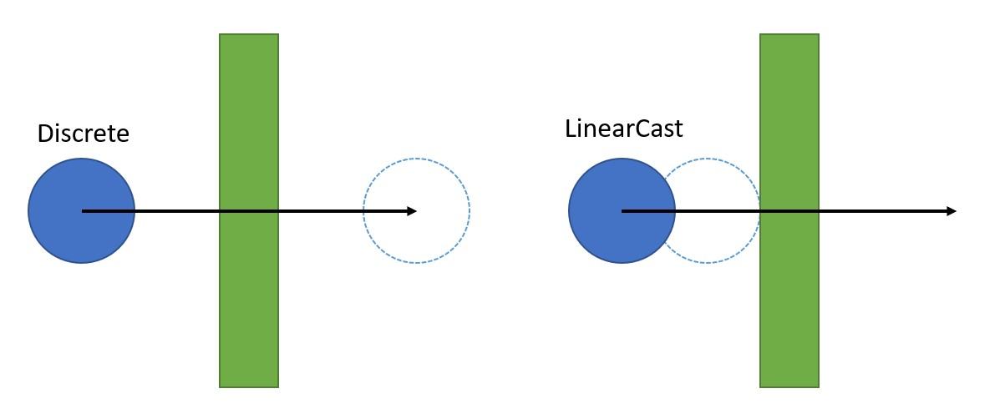

|
Jolt Physics
A multi core friendly Game Physics Engine
|
|
Jolt Physics
A multi core friendly Game Physics Engine
|
For demos and videos go to the Samples section.
We use a pretty traditional physics engine setup. We have rigid bodies (Body) that have attached collision volumes (Shape). Bodies can either be static (not simulating), dynamic (moved by forces) or kinematic (moved by velocities only). Each moving body has a MotionProperties object that contains information about the movement of the object. Static bodies do not have this to save space (but they can be configured to have it if a static body needs to become dynamic during its lifetime by setting BodyCreationSettings::mAllowDynamicOrKinematic).
Bodies are inserted into the PhysicsSystem and interacted with through the BodyInterface. Jolt is designed to be accessed from multiple threads so the body interface comes in two flavors: A locking and a non-locking variant. The locking variant uses a mutex array (a fixed size array of mutexes, bodies are associated with a mutex through hashing and multiple bodies use the same mutex, see MutexArray) to prevent concurrent access to the same body. The non-locking variant doesn't use mutexes, so requires the user to be careful.
In general, body ID's (BodyID) are used to refer to bodies. You can access a body through the following construct:
JPH::BodyLockInterface lock_interface = physics_system.GetBodyLockInterface(); // Or GetBodyLockInterfaceNoLock
JPH::BodyID body_id = ...; // Obtain ID to body
// Scoped lock
{
JPH::BodyLockRead lock(lock_interface, body_id);
if (lock.Succeeded()) // body_id may no longer be valid
{
const JPH::Body &body = lock.GetBody();
// Do something with body
...
}
}
When another thread has removed the body between the time the body ID was obtained and the lock, the lock will fail. While the lock is taken, other threads cannot modify the body, so it is safe to work with it. Each body ID contains a sequence number, so body ID's will only be reused after many add/remove cycles. To write to a body use BodyLockWrite.
You cannot use BodyLockRead to lock multiple bodies (if two threads lock the same bodies in opposite order you'll get a deadlock). Use BodyLockMultiRead or BodyLockMultiWrite to lock them in a consistent order.
Note that a lot of convenience functions are exposed through the BodyInterface, but not all functionality is available, so you may need to lock the body to get the pointer and then call the function directly on the body.
If you're only accessing the physics system from a single thread, you can use Body pointers instead of BodyID's. In this case you can also use the non-locking variant of the body interface.
Note that there are still some restrictions:
If you are accessing the physics system from multiple threads, you should probably use BodyID's and the locking variant of the body interface. It is however still possible to use Body pointers if you're really careful. E.g. if there is a clear owner of a Body and you ensure that this owner does not read/write state during PhysicsSystem::Update or while other threads are reading the Body there will not be any race conditions.
Each body has a shape attached that determines the collision volume. The following shapes are available (in order of computational complexity):
Next to this there are a number of decorator shapes that change the behavior of their children:
Simple shapes like spheres and boxes can be constructed immediately by simply new-ing them. Other shapes need to be converted into an optimized format in order to be usable in the physics simulation. The uncooked data is usually stored in a ShapeSettings object and then converted to cooked format by a Create function that returns a Result object that indicates success or failure and provides the cooked object.
Creating a convex hull for example looks like:
// Shapes are refcounted and can be shared between bodies
JPH::Ref<Shape> shape;
// The ShapeSettings object is only required for building the shape, all information is copied into the Shape class
{
// Create an array of vertices
JPH::Array<JPH::Vec3> vertices = { ... };
// Create the settings object for a convex hull
JPH::ConvexHullShapeSettings settings(vertices, JPH::cDefaultConvexRadius);
// Create shape
JPH::Shape::ShapeResult result = settings.Create();
if (result.IsValid())
shape = result.Get();
else
... // Error handling
}
Note that after you call Create, the shape is cached and ShapeSettings keeps a reference to your shape. If you call Create again, the same shape will be returned regardless of what changed to the settings object.
There are two ways of serializing data:
An example of saving a shape in binary format:
// Create a sphere of radius 1
JPH::Ref<Shape> sphere = new JPH::SphereShape(1.0f);
// For this example we'll be saving the shape in a STL string stream, but if you implement StreamOut you don't have to use STL.
stringstream data;
JPH::StreamOutWrapper stream_out(data);
// Save the shape (note this function handles CompoundShape too).
// The maps are there to avoid saving the same shape twice (it will assign an ID to each shape the first time it encounters them).
// If you don't want certain shapes to be saved, add them to the map and give them an ID.
// You can save many shapes to the same stream by repeatedly calling SaveWithChildren on different shapes.
JPH::Shape::ShapeToIDMap shape_to_id;
JPH::Shape::MaterialToIDMap material_to_id;
sphere->SaveWithChildren(stream_out, shape_to_id, material_to_id);
// Wrap the STL stream in a StreamIn
JPH::StreamInWrapper stream_in(data);
// Load the shape
// If you have assigned custom ID's on save, you need to ensure that the shapes exist in this map on restore too.
JPH::Shape::IDToShapeMap id_to_shape;
JPH::Shape::IDToMaterialMap id_to_material;
JPH::Shape::ShapeResult result = JPH::Shape::sRestoreWithChildren(stream_in, id_to_shape, id_to_material);
JPH::Ref<Shape> restored_shape;
if (result.IsValid())
restored_shape = result.Get();
else
... // Error handling
As the library does not offer an exporter from content creation packages and since most games will have their own content pipeline, we encourage you to store data in your own format, cook data while cooking the game data and store the result using the SaveBinaryState interface (and provide a way to force a re-cook when the library is updated).
In order to speed up the collision detection system, all convex shapes use a convex radius. The provided shape will first be shrunken by the convex radius and then inflated again by the same amount, resulting in a rounded off shape:
 |
|---|
| In this example a box (green) was created with a fairly large convex radius. The shape is shrunken first (dashed green line) and then inflated again equally on all sides. The resulting shape as seen by the collision detection system is shown in blue. A larger convex radius results in better performance but a less accurate simulation. A convex radius of 0 is allowed. |
Beware: When a shape is created, it will automatically recenter itself around its center of mass. The center of mass can be obtained by calling Shape::GetCenterOfMass and most functions operate in this Center of Mass (COM) space. Some functions work in the original space the shape was created in, they usually have World Space (WS) or Shape Space (SS) in their name (or documentation).
As an example, say we create a box and then translate it:
// Create box of 2x2x2 m (you specify half the side) JPH::BoxShapeSettings box(JPH::Vec3(1, 1, 1)); JPH::Ref<Shape> box_shape = box.Create().Get(); // Offset it by 10 m JPH::RotatedTranslatedShapeSettings translated_box(JPH::Vec3(10, 0, 0), JPH::Quat::sIdentity(), box_shape); JPH::Ref<Shape> translated_box_shape = translated_box.Create().Get(); // Cast a ray against the offset box (WRONG!) JPH::RayCast ray; ray.mOrigin = JPH::Vec3(10, 2, 0); ray.mDirection = JPH::Vec3(0, -2, 0); // Cast ray JPH::RayCastResult hit; bool had_hit = translated_box_shape->CastRay(ray, JPH::SubShapeIDCreator(), hit); JPH_ASSERT(!had_hit); // There's no hit because we did not correct for COM! // Convert the ray to center of mass space for the shape (CORRECT!) ray.mOrigin -= translated_box_shape->GetCenterOfMass(); // Cast ray had_hit = translated_box_shape->CastRay(ray, JPH::SubShapeIDCreator(), hit); JPH_ASSERT(had_hit); // Ray was in COM space, now there's a hit!
In the same way calling:
translated_box_shape->GetLocalBounds();
will return a box of size 2x2x2 centered around the origin, so in order to get it back to the space in which it was originally created you need to offset the bounding box:
JPH::AABox shape_bounds = translated_box_shape->GetLocalBounds(); shape_bounds.Translate(translated_box_shape->GetCenterOfMass()); JPH_ASSERT(shape_bounds == JPH::AABox(JPH::Vec3(9, -1, -1), JPH::Vec3(11, 1, 1))); // Now we have the box relative to how we created it
Note that when you work with interface of BroadPhaseQuery, NarrowPhaseQuery or TransformedShape this transformation is done for you.
If the defined Shape classes are not sufficient, or if your application can make a more efficient implementation because it has specific domain knowledge, it is possible to create a custom collision shape:
MyShapeSettings::Create function to construct an instance of MyShape.Factory::sInstance->Register(RTTI_OF(MyShapeSettings))EShapeType::User1EShapeSubType::User1EShapeSubType::UserConvex1, in which case you don't need to implement or register the collision detection functions mentioned below.MyShape::sRegister() function to register all collision functions, make sure you call this function after calling RegisterTypes(), see MeshShape::sRegister for an example.Sensors are normal rigid bodies that report contacts with other Dynamic or Kinematic bodies through the ContactListener interface. Any detected penetrations will however not be resolved. Sensors can be used to implement triggers that detect when an object enters their area.
The cheapest sensor has a Static motion type. This type of sensor will only detect active bodies entering their area. As soon as a body goes to sleep, the contact will be lost. Note that you can still move a Static sensor around using BodyInterface::SetPosition.
When you make a sensor Kinematic or Dynamic and activate it, it will also detect collisions with sleeping bodies, albeit with a higher run-time cost.
To create a sensor, either set BodyCreationSettings::mIsSensor to true when constructing a body or set it after construction through Body::SetIsSensor. A sensor can only use the discrete motion quality type at this moment.
Bodies can be connected to each other using constraints (Constraint).
The following constraints are available:
If you want to constrain a dynamic object to the unmovable 'world' you can use Body::sFixedToWorld instead of creating a static body.
Adding and removing constraints can be done from multiple threads, but the constraints themselves do not have any protection against concurrent access. We assume that constraints are owned by some object (e.g. a Ragdoll) and that object ensures that it only modifies its own constraints and contains its own synchronization logic. Constraints can be freely modified except during the physics simulation step.
Contact constraints (when bodies collide) are not handled through the Constraint class but through the ContactConstraintManager which is considered an internal class.
Most of the constraints support motors (see MotorSettings) which allow you to apply forces/torques on two constrained bodies to drive them to a relative position/orientation. There are two types of motors:
Motors can have three states (see EMotorState or e.g. SliderConstraint::SetMotorState):
Motors apply a force (when driving position) or torque (when driving angle) every simulation step to achieve the desired velocity or position. You can control the maximum force/torque that the motor can apply through MotorSettings::mMinForceLimit, MotorSettings::mMaxForceLimit, MotorSettings::mMinTorqueLimit and MotorSettings::mMaxTorqueLimit. Note that if a motor is driving to a position, the torque limits are not used. If a constraint is driving a position, the force limits are not used.
Usually the limits are symmetric, so you would set -mMinForceLimit = mMaxForceLimit. This way the motor can push at an equal rate as it can pull. If you would set the range to e.g. [0, FLT_MAX] then the motor would only be able to push in the positive direction. The units for the force limits are Newtons and the values can get pretty big. If your motor doesn't seem to do anything, chances are that you have set the value too low. Since Force = Mass * Acceleration you can calculate the approximate force that a motor would need to supply in order to be effective. Usually the range is set to [-FLT_MAX, FLT_MAX] which lets the motor achieve its target as fast as possible.
For an angular motor, the units are Newton Meters. The formula is Torque = Inertia * Angular Accelaration. Inertia of a solid sphere is 2/5 * Mass * Radius^2. You can use this to get a sense of the amount of torque needed to get the angular acceleration you want. Again, you'd usually set the range to [-FLT_MAX, FLT_MAX] to not limit the motor.
When settings the force or torque limits to [-FLT_MAX, FLT_MAX] a velocity motor will accelerate the bodies to the desired relative velocity in a single time step (if no other forces act on those bodies).
Position motors have two additional parameters: Frequency (MotorSettings::mFrequency, Hz) and damping (MotorSettings::mDamping, no units). They are implemented as described in Soft Contraints: Reinventing The Spring - Erin Catto - GDC 2011.
You can see a position motor as a spring between the target position and the rigid body. The force applied to reach the target is linear with the distance between current position and target position. When there is no damping, the position motor will cause the rigid body to oscillate around its target.
 |
|---|
| A rigid body on a slider constraint. The body starts at 1 and is driven to 0 with a position motor. Two different motor frequencies are shown. The higher the frequency, the faster the motor will reach its target, but without damping it will overshoot and oscillate forever. |
Valid frequencies are in the range (0, 0.5 * simulation frequency]. A frequency of 0 results in no force being applied, a frequency larger than half of the physics simulation frequency will result in instability. For a 60 Hz physics simulation, 20 is a good value for a stiff spring (without damping it will reach its target in 1/(4 * 20) = 0.0125 s), 2 is good for a soft spring (will reach its target in 1/(4 * 2) = 0.125 s).
In order to prevent the motor from overshooting its target, we use damping.
 |
|---|
| A rigid body on a slider constraint. The body starts at 1 and is driven to 0 with a position motor. The frequency of the motor is 2 Hz and the lines correspond to different damping values. |
Sensible values for damping are [0, 1] but higher values are also possible. When the damping is below 1, the body will still oscillate around its target, but that oscillation will die out. When the damping is 1 (called critical damping) there is no oscillation at all but it will take longer for the motor to reach its target. When damping is bigger than 1, the system is over dampened. There will not be any oscillation, but it will take even longer for the motor to reach its target.
Because Jolt Physics uses a Symplectic Euler integrator, there will still be a small amount of damping when damping is 0, so you cannot get infinite oscillation (allowing this would make it very likely for the system to become unstable).
Constraints can be turned on / off by calling Constraint::SetEnabled. After every simulation step, check the total 'lambda' applied on each constraint and disable the constraint if the value goes over a certain threshold. Use e.g. SliderConstraint::GetTotalLambdaPosition / HingeConstraint::GetTotalLambdaRotation. You can see 'lambda' as the linear/angular impulse applied at the constraint in the last physics step to keep the constraint together.
When bodies are added to the PhysicsSystem, they are inserted in the broad phase (BroadPhaseQuadTree). This provides quick coarse collision detection based on the axis aligned bounding box (AABB) of a body.
The broad phase is divided in layers, each layer has a AABB quad tree associated with it. When constructing the physics system an ObjectVsBroadPhaseLayerFilter and ObjectLayerPairFilter need to be provided. These determine which object layers collide with which other layer. If two layers don't collide, the objects inside those layers cannot collide. A standard setup would be to have a MOVING and a NON_MOVING layer, where NON_MOVING doesn't collide with NON_MOVING and all other permutations collide. This ensures that all static bodies are in one tree (which is infrequently updated) and all dynamic bodies are in another (which is updated every simulation step). It is possible to create more layers like a BULLET layer for high detail collision bodies that are attached to lower detail simulation bodies, the MOVING layer would not collide with the BULLET layer, but when performing e.g. weapon collision queries you can filter for only objects in the BULLET layer.
Since we want to access bodies concurrently the broad phase has special behavior. When a body moves, all nodes in the AABB tree from root to the node where the body resides will be expanded using a lock-free approach. This way multiple threads can move bodies at the same time without requiring a lock on the broad phase. Nodes that have been expanded are marked and during the next physics step a new tight-fitting tree will be built in the background while the physics step is running. This new tree will replace the old tree before the end of the simulation step. This is possible since no bodies can be added/removed during the physics step.
When doing a query against the broad phase (BroadPhaseQuery), you generally will get a body ID for intersecting objects. If a collision query takes a long time to process the resulting bodies (e.g. across multiple simulation steps), you can safely keep using the body ID's as specified in the "Bodies" section.
A narrow phase query (NarrowPhaseQuery) will first query the broad phase for intersecting bodies and will under the protection of a body lock construct a transformed shape (TransformedShape) object. This object contains the transform, a reference counted shape and a body ID. Since the shape will not be deleted until you destroy the TransformedShape object, it is a consistent snapshot of the collision information of the body. This ensures that the body is only locked for a short time frame and makes it possible to do the bulk of the collision detection work outside the protection of a lock.
For very long running jobs (e.g. navigation mesh creation) it is possible to query all transformed shapes in an area and then do the processing work using a long running thread without requiring additional locks (see NarrowPhaseQuery::CollectTransformedShapes).
The narrow phase queries are all handled through the GJK and EPA algorithms.
As touched upon in the Broad Phase section, there are various collision filtering functions:
The filter functions are listed in the order they're called. To avoid work, try to filter out collisions as early as possible.
The simulation step PhysicsSystem::Update uses jobs (JobSystem) to perform the needed work. This allows spreading the workload across multiple CPU's. We use a Sequential Impulse solver with warm starting as described in Modeling and Solving Constraints - Erin Catto
Each physics step can be divided into multiple sub steps. There are collision and integration steps. For each collision step we run X integration steps, so if you run the simulation at 60 Hz with 2 collision steps and 3 integration steps we run:
In general, the system is stable when running at 60 Hz with 1 collision and 1 integration step.
Jolt Physics uses a right handed coordinate system with Y-up. It is easy to use another axis as up axis by changing the gravity vector using PhysicsSystem::SetGravity. Some shapes like the HeightFieldShape will need an additional RotatedTranslatedShape to rotate it to the new up axis and vehicles (VehicleConstraint) and characters (CharacterBaseSettings) will need their new up-axis specified too.
We use column-major vectors and matrices, this means that to transform a point you need to multiply it on the right hand side: TransformedPoint = Matrix * Point.
Note that the physics simulation works best if you use SI units (meters, radians, seconds, kg). In order for the simluation to be accurate, dynamic objects should be in the order [0.1, 10] meters long and have speeds in the order of [0, 500] m/s. Static object should be in the order [0.1, 2000] meter long. If you are using different units, consider scaling the objects before passing them on to the physics simulation.
By default the library compiles using floats. This means that the simulation gets less accurate the further you go from the origin. If all simulation takes place within roughly 5 km from the origin, floating point precision is accurate enough.
If you have a bigger world, you may want to compile the library using the JPH_DOUBLE_PRECISION define. When you do this, all positions will be stored as doubles, which will make the simulation accurate even at thousands of kilometers away from the origin.
Calculations with doubles are much slower than calculations with floats. A naive implementation that changes all calculations to doubles has been measured to run more than 2x slower than the same calculations using floats. Because of this, Jolt Physics will only use doubles where necessary and drop down to floats as soon as possible. In order to do this, many of the collision query functions will need a 'base offset'. All collision results will be returned as floats relative to this base offset. By choosing the base offset wisely (i.e. close to where collision results are expected) the results will be accurate. Make sure your base offset is not kilometers away from the collision result.
Keep in mind that:
Because of the minimal use of doubles, the simulation runs 5-10% slower in double precision mode compared to float precision mode.
Each body has a motion quality setting (EMotionQuality). By default the motion quality is Discrete. This means that at the beginning of each simulation step we will perform collision detection and if no collision is found, the body is free to move according to its velocity. This usually works fine for big or slow moving objects. Fast and small objects can easily 'tunnel' through thin objects because they can completely move through them in a single time step. For these objects there is the motion quality LinearCast. Objects that have this motion quality setting will do the same collision detection at the beginning of the simulation step, but once their new position is known, they will do an additional CastShape to check for any collisions that may have been missed. If this is the case, the object is placed back to where the collision occurred and will remain there until the next time step. This is called 'time stealing' and has the disadvantage that an object may appear to move much slower for a single time step and then speed up again. The alternative, back stepping the entire simulation, is computationally heavy so was not implemented.
|  |
|---|
| With the Discrete motion quality the blue object tunnels through the green object in a single time step. With motion quality LinearCast it doesn't. |
Fast rotating long objects are also to be avoided, as the LinearCast motion quality will fully rotate the object at the beginning of the time step and from that orientation perform the CastShape, there is a chance that the object misses a collision because it rotated through it.
 |
|---|
| Even with the LinearCast motion quality the blue object rotates through the green object in a single time step. |
The physics simulation is deterministic provided that:
If you want cross platform determinism then please turn on the CROSS_PLATFORM_DETERMINISTIC option in CMake. This will make the library approximately 8% slower but the simulation will be deterministic regardless of:
Note that the same source code must be used to compile the library on all platforms. Also note that it is quite difficult to verify cross platform determinism, so this feature is less tested than other features.
When running the Samples Application you can press ESC, Physics Settings and check the 'Check Determinism' checkbox. Before every simulation step we will record the state using the StateRecorder interface, rewind the simulation and do the step again to validate that the simulation runs deterministically. Some of the tests (e.g. the MultiThreaded) test will explicitly disable the check because they randomly add/remove bodies from different threads. This violates the first rule so will not result in a deterministic simulation.
When synchronizing two simulations via a network, it is possible that a change that needed to be applied at frame N is received at frame N + M. This will require rolling back the simulation to the state of frame N and repeating the simulation with the new inputs. This can be implemented by saving the physics state using SaveState at every frame. To roll back, call RestoreState with the state at frame N. SaveState only records the state that the physics engine modifies during its update step (positions, velocities etc.), so if you change anything else you need to restore this yourself. E.g. if you did a SetFriction on frame N + 2 then, when rewinding, you need to restore the friction to what is was on frame N and update it again on frame N + 2 when you replay. If you start adding/removing objects (e.g. bodies or constraints) during these frames, the RestoreState function will not work. If you added a body on frame N + 1, you'll need to remove it when rewinding and then add it back on frame N + 1 again (with the proper initial position/velocity etc. because it won't be contained in the snapshot at frame N).
If you wish to share saved state between server and client, you need to ensure that all APIs that modify the state of the world are called in the exact same order. So if the client creates physics objects for player 1 then 2 and the server creates the objects for 2 then 1 you already have a problem (the body IDs will be different, which will render the save state snapshots incompatible). When rolling back a simulation, you'll also need to ensure that the BodyIDs are kept the same, so you need to remove/add the body from/to the physics system instead of destroy/re-create them or you need to create bodies with the same ID on both sides using BodyInterface::CreateBodyWithID.
You can create, simulate and interact with multiple PhysicsSystems at the same time provided that you do not share any objects (bodies, constraints) between the systems. When a Body is created it receives a BodyID that is unique for the PhysicsSystem that it was created for, so it cannot be shared. The only object that can be shared between PhysicsSystems is a Shape. If you want to move a body from one PhysicsSystem to another, use Body::GetBodyCreationSettings to get the settings needed to create the body in the other PhysicsSystem.
PhysicsSystems are not completely independent:
These functions / systems need to be registered in advance.
The job graph looks like this:
Note that each job indicates if it reads/writes positions/velocities and if it deactivates/activates bodies. We do not allow jobs to read/write the same data concurrently. The arrows indicate the order in which jobs are executed. Yellow blocks mean that there are multiple jobs of this type. Dotted arrows have special meaning and are explained below.
This job will refit the AABBs of the broad phase. It does this by building a new tree while keeping the old one available as described in the "Broad Phase" section.
This job will simply swap the new tree with the old tree. The old tree will be discarded at the beginning of the next PhysicsSystem::Update call so that any broad phase query can continue to run.
You can register one or more step listeners (See PhysicsSystem::AddStepListener). This job will call PhysicsStepListener::OnStep for every listener. This can be used to do work that needs to be done at the beginning of each step, e.g. set velocities on ragdoll bodies.
A number of these jobs run in parallel. Each job takes a batch of active bodies and applies gravity and damping (updating linear and angular velocity).
This job will go through all non-contact constraints and determine which constraints are active based on if the bodies that the constraint connects to are active.
This job will go through all non-contact constraints and assign the involved bodies and constraint to the same island. Since we allow concurrent insertion/removal of bodies we do not want to keep island data across multiple simulation steps, so we recreate the islands from scratch every simulation step. The operation is lock-free and O(N) where N is the number of constraints.
If a constraint connects an active and a non-active body, the non-active body is woken up. One find collisions job will not start until this job has finished in order to pick up any collision testing for newly activated bodies.
This job will do broad and narrow phase checks. Initially a number of jobs are started based on the amount of active bodies. The job will do the following:
Note that this job cannot start until apply gravity is done because the velocity needs to be known for elastic collisions to be calculated properly.
The contact points between the two bodies will be determined by the GJK and EPA algorithms. For each contact point we will calculate the face that belongs to that contact point. The faces of both bodies are clipped against each other (ManifoldBetweenTwoFaces) so that we have a polygon (or point / line) that represents the contact between the two bodies (contact manifold).
Multiple contact manifolds with similar normals are merged together (PhysicsSystem::ProcessBodyPair::ReductionCollideShapeCollector). After this the contact constraints are created in the ContactConstraintManager and their Jacobians / effective masses calculated.
Contacting bodies are also linked together to form islands. This is the same operation as described in the "Build Islands From Constraints" section.
The narrow phase makes use of a lock free contact cache. We have 2 caches, one that is used for reading (which contains the contacts from the previous step) and one for writing new contact pairs. When a contact point is preserved from the last simulation step, it will be copied from the read cache to the write cache.
This job will go through all non-contact constraints and prepare them for execution. This involves calculating Jacobians and effective masses for each constraint part.
This job will finalize the building of the simulation islands. Each island contains bodies that interact with each other through a contact point or through a constraint. These islands will be simulated separately in different jobs later. The finalization of the islands is an O(N) operation where N is the amount of active bodies (see IslandBuilder::Finalize).
This job does some housekeeping work that can be executed concurrent to the solver:
A number of these jobs will run in parallel. Each job takes the next unprocessed island and will run the iterative constraint solver for that island. It will first apply the impulses applied from the previous simulation step (which are stored in the contact cache) to warm start the solver. It will then repeatedly iterate over all contact and non-contact constraints until either the applied impulses are too small or a max iteration count is reached (PhysicsSettings::mNumVelocitySteps). The result will be that the new velocities are known for all active bodies. In the last integration step, the applied impulses are stored in the contact cache for the next step.
When an island consists of more than LargeIslandSplitter::cLargeIslandTreshold contacts plus constraints it is considered a large island. In order to not do all work on a single thread, this island will be split up by the LargeIslandSplitter. This follows an algorithm described in High-Performance Physical Simulations on Next-Generation Architecture with Many Cores by Chen et al. This is basically a greedy algorithm that tries to group contacts and constraints into groups where no contact or constraint affects the same body. Within a group, the order of execution does not matter since every memory location is only read/written once, so we can parallelize the update. At the end of each group, we need to synchronize the CPU cores before starting on the next group. When the number of groups becomes too large, a final group is created that contains all other contacts and constraints and these are solved on a single thread. The groups are processed PhysicsSettings::mNumVelocitySteps times so the end result is almost the same as an island that was not split up (only the evalutation order changes in a consistent way). Note that the large island splitter can only be used when the number of integration sub steps passed to PhysicsSettings::Update is 1.
This job prepares the CCD buffers.
This job will integrate the velocity and update the position. It will clamp the velocity to the max velocity.
Depending on the motion quality (EMotionQuality) of the body, it will schedule a body for continuous collision detection (CCD) if its movement is bigger than some treshold based on the inner radius) of the shape.
Find CCD Contact jobs are created on the fly depending on how many CCD bodies were found. If there are no CCD bodies it will immediately start Resolve CCD Contacts.
A number of jobs wil run in parallel and pick up bodies that have been scheduled for CCD and will do a linear cast to detect the first collision. It always allows movement of the object by a fraction if its inner radius in order to prevent it from getting fully stuck.
This job will take the collision results from the previous job and update position and velocity of the involved bodies. If an object hits another object, its time will be 'stolen' (it will move less far than it should according to its velocity).
This job will:
A number of these jobs will run in parallel. Each job takes the next unprocessed island and run the position based constraint solver. This fixes numerical drift that may have caused constrained bodies to separate (remember that the constraints are solved in the velocity domain, so errors get introduced when doing a linear integration step). It will run until either the applied position corrections are too small or until the max amount of iterations is reached (PhysicsSettings::mNumPositionSteps). Here there is also support for large islands, the island splits that were calculated in the Solve Velocity Constraints job are reused to solve partial islands in the same way as before.
It will also notify the broad phase of the new body positions / AABBs.
When objects move too little the body will be put to sleep. This is detected by taking the biggest two axis of the local space bounding box of the shape together with the center of mass of the shape (all points in world space) and keep track of 3 bounding spheres for those points over time. If the bounding spheres become too big, the bounding spheres are reset and the timer restarted. When the timer reaches a certain time, the object has is considered non-moving and is put to sleep.
In the second and later integration sub steps, we combine the Apply Gravity, Setup Velocity Constraints and the Solve Velocity Constraints jobs. There are multiple of these jobs and they each process simulation islands until there are no more.